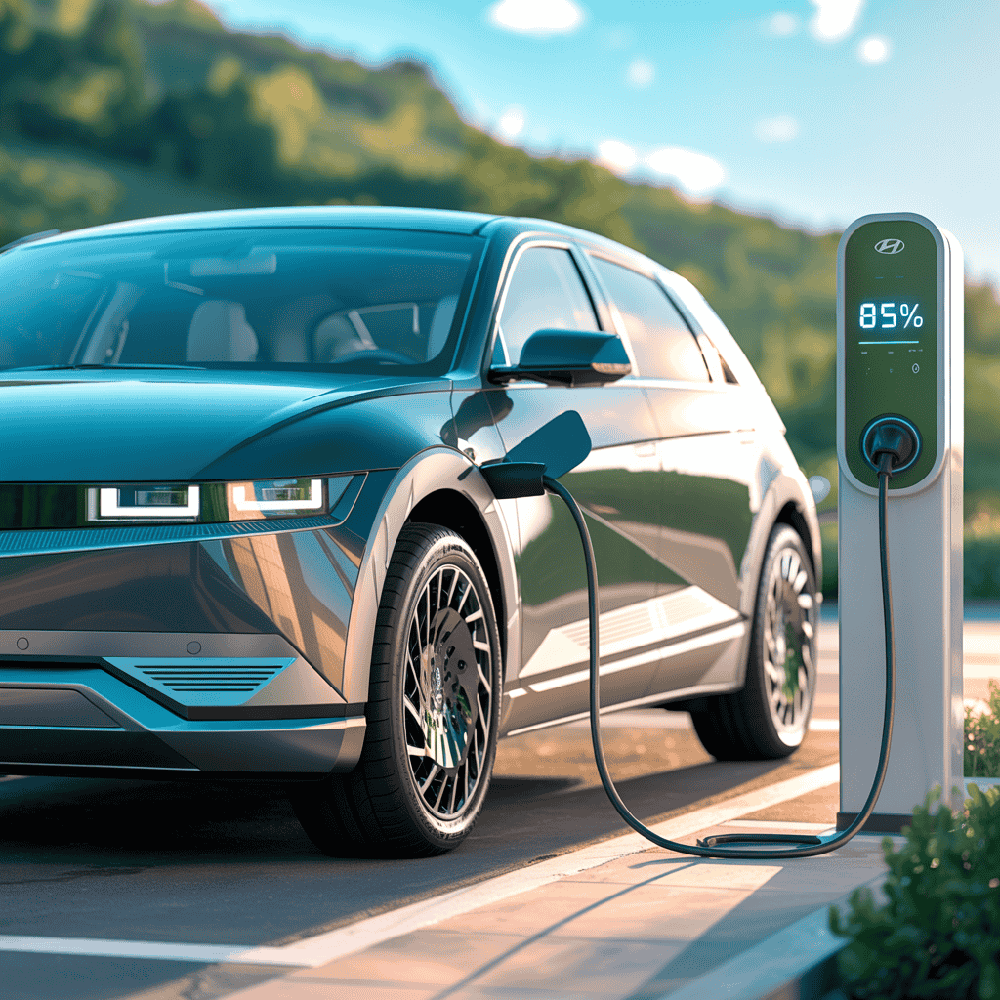
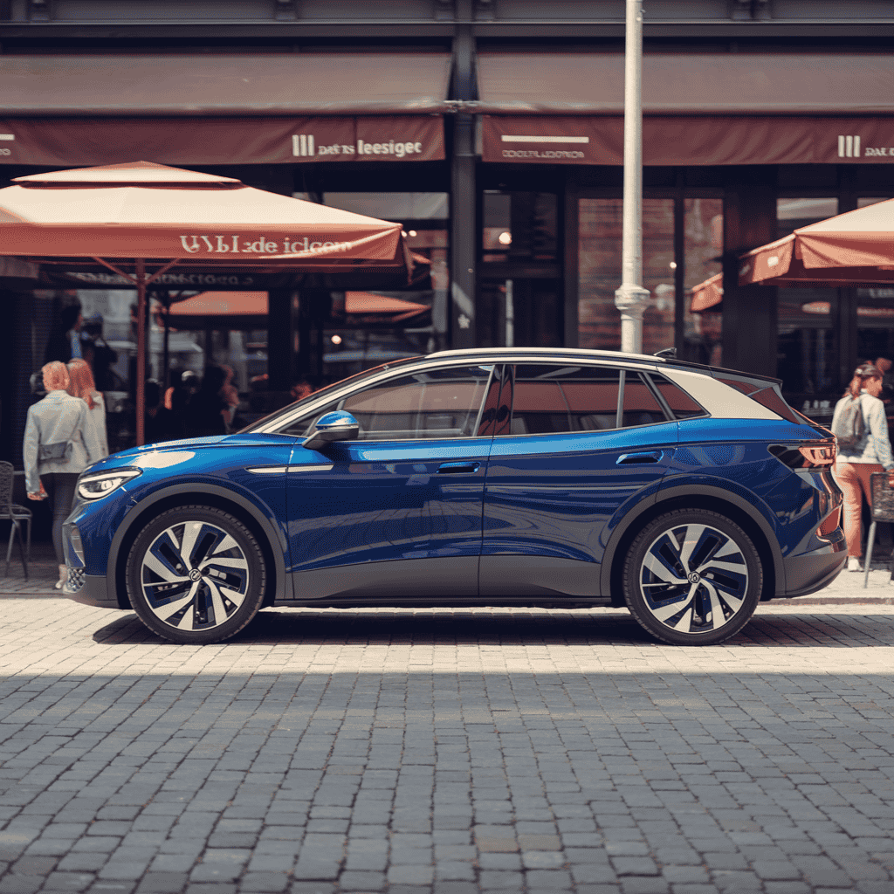

Comprar un coche eléctrico nuevo supone una inversión importante, pero ¿qué ocurre cuando llega el momento de venderlo? El valor de reventa (o depreciación) es clave para saber si tu coche eléctrico ha sido una buena compra a largo plazo.
En este artículo repasamos qué modelos eléctricos mantienen mejor su precio, por qué Tesla sigue dominando el mercado de segunda mano, y si realmente vale la pena apostar por un Tesla usado en 2025. Analizaremos datos reales de portales como Coches.net y tendencias del mercado de coches eléctricos segunda mano. Si estás considerando comprar un Tesla de segunda mano, esta guía te ayudará a tomar la mejor decisión.
Introducción: la importancia del valor de reventa en coches eléctricos
Comprar un coche eléctrico nuevo supone una inversión importante, pero ¿qué ocurre cuando llega el momento de venderlo? El valor de reventa (o depreciación) es clave para saber si tu coche eléctrico ha sido una buena compra a largo plazo.
üìä Dato clave:
Los coches eléctricos se deprecian de media un 25-30% en los primeros 3 años, pero algunos modelos como Tesla mantienen hasta el 75% de su valor, convirtiéndolos en mejores inversiones que muchos modelos de combustión.
En este artículo analizamos el mercado de ocasión de coches eléctricos, comparamos tasas de depreciación y te ayudamos a decidir si un Tesla usado es realmente una buena inversión frente a otras opciones del mercado de segunda mano.
Por qué los coches eléctricos pierden valor más rápido (o más lento)
Hasta hace poco, se decía que los coches eléctricos se depreciaban más rápido que los coches de combustión. Sin embargo, esto está cambiando rápidamente gracias a la maduración del mercado y la mayor confianza de los compradores.
Factores que influyen en la depreciación
La depreciación de un coche eléctrico depende de múltiples factores que van más allá del simple paso del tiempo:
- Capacidad y salud de la batería: Los coches con baterías más duraderas (como las LFP) mantienen mejor su valor
- Actualizaciones de software: Marcas como Tesla mejoran sus coches con el tiempo, lo que reduce la depreciación
- Demanda del mercado: La mayor adopción de eléctricos usados en Europa impulsa sus precios
- Disponibilidad de cargadores y ayudas: El despliegue de puntos de carga y los planes MOVES favorecen su reventa
Para entender mejor cómo cuidar la batería de tu coche eléctrico y maximizar su valor de reventa, te recomiendo leer nuestra guía completa sobre duración de baterías.
La excepción Tesla: software y ecosistema
Tesla ha logrado romper la tendencia tradicional, ya que sus coches conservan mejor su valor gracias a:
- Software actualizable OTA (como un móvil) que mejora el vehículo con el tiempo
- Gran red de Superchargers exclusiva que garantiza una experiencia de carga premium
- Alta demanda en el mercado de segunda mano por su fiabilidad y prestaciones
- Imagen de marca aspiracional que mantiene el deseo de los compradores
Esta combinación ha convertido a Tesla en el referente del mercado de ocasión de coches eléctricos, donde un Model 3 de 2022 puede costar casi lo mismo que un modelo nuevo equivalente de otra marca.
Ranking de coches eléctricos con más valor de reventa (2025)
Según datos de portales como Coches.net, Heycar y Autobild, estos son los modelos que menos se deprecian tras 3 años de uso:
| Modelo | % valor retenido tras 3 años | Motivos principales |
|---|---|---|
| 70–75 % | Alta demanda, software OTA, batería duradera | |
| 68–72 % | SUV más vendido, buen rendimiento y autonomía | |
| 65–68 % | Buena fiabilidad y carga rápida | |
|

Hyundai Ioniq 5
|
64–66 % | Diseño icónico y eficiencia |
|

Volkswagen ID.4
|
60–63 % | Marca sólida y red de servicio |
| 59–62 % | Imagen premium y menor oferta en segunda mano |


üìà Tendencia 2025:
Los coches eléctricos asiáticos (Kia, Hyundai, BYD) están aumentando su valor residual gracias a la confianza del mercado europeo en su fiabilidad. Modelos como el Kia EV6 han pasado de ser desconocidos a convertirse en referentes de depreciación contenida.
¿Vale la pena comprar un Tesla usado?
Los Tesla de segunda mano representan una parte importante del mercado de coches eléctricos usados. Pero, ¿sigue siendo una buena inversión en 2025? Analicemos ventajas y desventajas.
Ventajas de un Tesla usado
- Actualizaciones continuas: Tesla lanza mejoras OTA incluso en modelos de hace 4–5 años
- Baterías muy resistentes: Algunos Model S y Model 3 superan los 300.000 km con poca degradación
- Ecosistema completo: Acceso a Superchargers, app propia, navegación optimizada y garantía extendida
- Alto valor de reventa: Se venden rápido y con poco margen de negociación

Desventajas a considerar
- Precios todavía altos: Incluso usados, los Tesla mantienen precios cercanos a modelos nuevos equivalentes
- Coste de reparación elevado: Piezas exclusivas y servicio posventa concentrado en pocos centros
- Actualizaciones que limitan funciones: Algunas versiones usadas pueden perder opciones (como conectividad Premium)
- Competencia creciente: Marcas como BYD o MG ofrecen modelos nuevos por precios similares
En resumen, un Tesla usado es una gran opción si valoras las actualizaciones y el ecosistema, pero si buscas el mejor precio y una garantía más amplia, los coches eléctricos nuevos de marcas asiáticas pueden ser más rentables a largo plazo.
Cómo evaluar un coche eléctrico usado
Antes de comprar un Tesla o cualquier eléctrico de segunda mano, es fundamental hacer una evaluación completa. Aquí tienes los puntos clave a revisar:
1. Estado de la batería
La batería es el componente más caro de un coche eléctrico. Pide un informe de degradación (porcentaje de salud) y evita coches con más de un 15% de pérdida. En Tesla, puedes ver este dato en la pantalla del vehículo o a través de la app.
2. Historial de carga
Comprueba si ha cargado siempre en corriente continua (DC), lo que acelera la degradación. Los vehículos que han usado principalmente carga doméstica (AC) suelen tener baterías en mejor estado. Para saber cómo cargar correctamente tu coche eléctrico y preservar la batería, consulta nuestra guía completa.
3. Garantía restante
Tesla ofrece 8 años o 160.000 km en batería y motor (según modelo). Otros fabricantes como Kia y Hyundai ofrecen garantías similares. Asegúrate de que la garantía cubra los componentes principales. Para conocer las ayudas y subvenciones disponibles para coches eléctricos que pueden mejorar la rentabilidad de tu compra, revisa nuestra guía actualizada.
4. Versión de software
Algunas funciones (como Autopilot) pueden variar entre unidades, incluso del mismo año. Verifica que el software esté actualizado y que incluya todas las funciones que esperas.
üí° Consejo experto:
Para evaluar correctamente un coche eléctrico segunda mano, considera hacer una inspección profesional en un taller especializado en vehículos eléctricos. El Plan MOVES 2026 también incluye ayudas para compra de usados que pueden hacer más atractiva la inversión. Además, es fundamental conocer las mejores prácticas de mantenimiento para preservar el valor de tu vehículo eléctrico.
Coches eléctricos con peor valor de reventa
No todos los modelos coches eléctricos conservan bien su valor. Entre los que más se deprecian según el mercado europeo están:
- Renault Zoe: Sobreoferta en el mercado y baterías arrendadas afectan su reventa
- Nissan Leaf: Modelo veterano sin refrigeración líquida en versiones antiguas
- Peugeot e-208 y Opel Corsa-e: Depreciación rápida por actualización de versiones recientes
Si estás considerando comprar un Renault eléctrico usado o un Peugeot e-208 de segunda mano, ten en cuenta que estos modelos se deprecian más rápido pero pueden ser buenas opciones de entrada al mercado eléctrico.
Estos modelos pueden ser buenas compras usadas si buscas precio, pero no son buenas inversiones a futuro. La sobreoferta y la competencia de modelos más modernos presionan sus precios a la baja.
Conclusión: Tesla sigue dominando el mercado de reventa
El mercado de ocasión eléctrico ha madurado: ya no todos los modelos pierden valor rápidamente. Los Tesla Model 3 y Model Y lideran el ranking por su fiabilidad, actualizaciones y red de carga, seguidos por Kia EV6 y Hyundai Ioniq 5.
Si estás interesado en conocer más sobre los mejores SUV eléctricos del mercado y su comportamiento en el mercado de segunda mano, te recomendamos revisar nuestra comparativa completa.
✅ En resumen:
- Si buscas un coche eléctrico usado con buena reventa, Tesla sigue siendo la apuesta más segura
- Si priorizas precio, garantía y coste total, un eléctrico nuevo de marca asiática puede ser más rentable a largo plazo
- El mercado de segunda mano eléctrico está en auge, con cada vez más opciones y precios más estables
La clave está en evaluar correctamente cada modelo según tus necesidades: si valoras las actualizaciones continuas y el ecosistema Tesla, un Model 3 usado puede ser una excelente inversión. Si buscas el mejor precio y garantía extendida, considera las nuevas opciones de marcas como Kia, Hyundai o BYD.
Recuerda que el mercado de coches eléctricos segunda mano evoluciona rápidamente. Te recomiendo consultar las ayudas del Plan MOVES 2026 y comparar opciones en portales especializados antes de decidir.
Preguntas frecuentes sobre valor de reventa de coches eléctricos
FAQ – Valor de reventa de coches eléctricos
üîπ ¿Qu√© coches el√©ctricos mantienen mejor su valor de reventa?
Los Tesla Model 3 y Model Y lideran el ranking de valor de reventa, conservando entre el 70-75% y 68-72% de su valor respectivamente tras 3 años. Les siguen Kia EV6 (65-68%), Hyundai Ioniq 5 (64-66%) y Volkswagen ID.4 (60-63%).
üîπ ¿Vale la pena comprar un Tesla usado?
Sí vale la pena si buscas un coche con actualizaciones continuas, baterías resistentes y alto valor de reventa. Sin embargo, los precios siguen siendo altos y el mantenimiento puede ser costoso. Si priorizas precio y garantía, un eléctrico nuevo de marca asiática puede ser más rentable.
üîπ ¿C√≥mo evaluar un coche el√©ctrico usado antes de comprar?
Revisa el estado de la batería (degradación máxima 15%), historial de carga (evitar cargas DC frecuentes), garantía restante (Tesla ofrece 8 años o 160.000 km) y versión de software. También comprueba que todas las funciones como Autopilot estén incluidas.